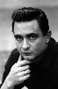

Country:United States, 208 minutes
Spoken languages:English
Genres:Documentary, Music
Director(s):Martin Scorsese
Writer(s):
Video Codec:Unknown
Number: 676


Certification:
Storyline:
A chronicle of Bob Dylan's strange evolution between 1961 and 1966 from folk singer to protest singer to "voice of a generation" to rock star.
Cast: 
Medium: Original DVD,
Loaned: No
Aspect ratio: Unknown